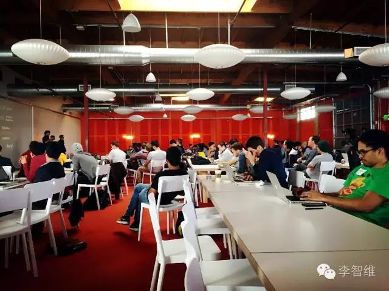
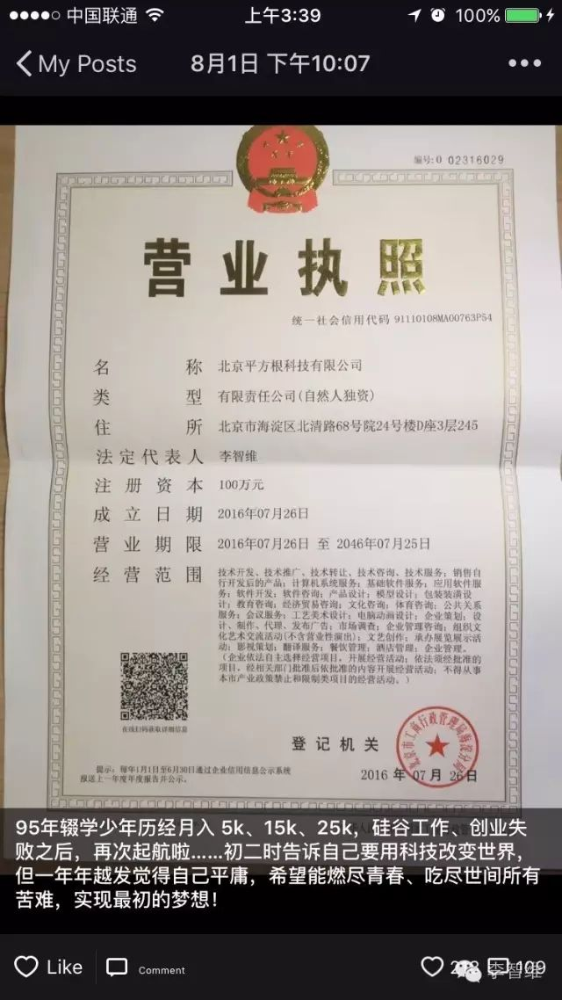
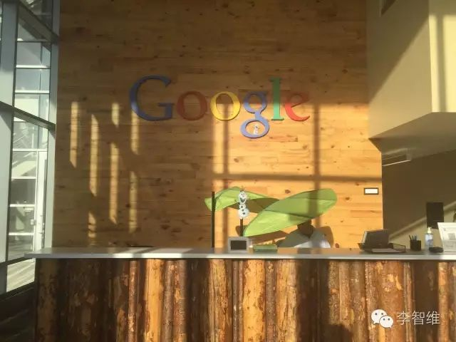
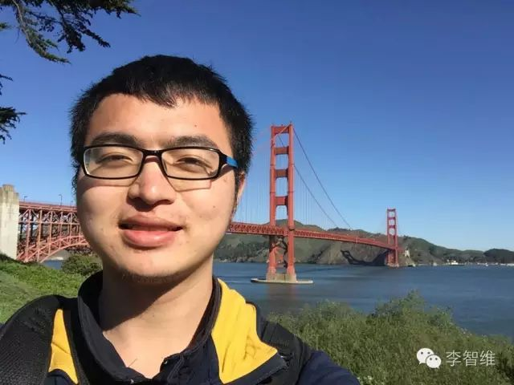

Alcanza pequeños objetivos junto a un CEO de 21 años | Original, traducido por IA

Esta es una foto que tomé en Y Combinator cuando fui a Silicon Valley en marzo. En la sala había un grupo de personas emprendiendo, provenientes de todo el mundo, la mayoría de unos 20 años, como estudiantes de segundo y tercer año del MIT, entre otros. La sensación que tuve fue que los mejores de mi generación ya estaban en el camino del emprendimiento. Si no emprendía yo mismo, me quedaría aún más atrás. Así que, una vez más, decidí empezar de nuevo.
 Hemos recibido 218 “me gusta”, muchas gracias por el apoyo de cada uno de nuestros amigos.
¿Cómo llegué paso a paso hasta donde estoy hoy? ¿Qué fue lo que motivó a mi yo de 21 años a salir sin pensarlo dos veces, decidido a lograr lo que me propuse?
Experiencia
Mi experiencia. Comencé a programar en la secundaria y participé en competencias de algoritmos. En mi primer año de universidad, ingresé a la Universidad Forestal de Beijing, donde desarrollé varias aplicaciones Android, como “Asistente de Beilin”, que fue utilizada por 3500 estudiantes de la universidad, y “iword”, que ganó el tercer lugar en un hackathon y luego fue desarrollada durante varios meses. En el verano de mi primer año, hice una pasantía en LeanCloud, y luego dejé la universidad para trabajar allí durante un año y medio. Pasé de ser un novato a estar entre la mitad superior en rendimiento entre colegas que habían trabajado en Google, Alibaba y Wandoujia. Desarrollé la aplicación “LeanChat” para Android y iOS, creé varios demos y también trabajé en el SDK de iOS de la empresa, lo que justificó el salario de 15k que la empresa me ofreció. En noviembre de 2015, junto con Ye Gucheng y otros compañeros, fundamos “Reviewcode.cn”, organizamos intercambios y cursos de formación, generando ingresos de 150,000 yuanes. En el equipo, me encargué del backend, la mitad del desarrollo frontend y la mitad de la formación, impulsando el desarrollo del producto y asegurando que las cosas se hicieran correctamente. En marzo, fui a Silicon Valley para aprender, visité Google y experimenté el espíritu emprendedor en Y Combinator, el mejor acelerador del mundo. Tuve una gran oportunidad de trabajar en Silicon Valley, pero la rechacé. Después de regresar a China en junio, el equipo enfrentó problemas de dirección y no continuó. Me uní a una empresa de reemprendimiento fundada por el ex vicepresidente de Jumei, el Sr. Ye, y el ex CTO de Jumei, Yang Jun, y a menudo trabajábamos hasta las 2 o 3 de la mañana. Durante este tiempo, aproveché cada oportunidad para conversar con ellos. Ambos jefes, de poco más de 30 años, eran ejemplos de jóvenes talentosos y me enseñaron mucho. Sin embargo, soy demasiado impaciente… Lamento no haber cumplido con las altas expectativas de mis jefes y decidí emprender por mi cuenta nuevamente…
Así fue como, a los 21 años, en el momento en que estaba a punto de comenzar mi último año de universidad, decidí renunciar a un salario de 25k y emprender nuevamente. De hecho, las personas que han trabajado conmigo me conocen mejor, y la descripción anterior es solo superficial. Por ejemplo, en los campos de iOS, Android, backend y frontend, podría encontrar trabajos que paguen entre 20k y 30k, y también he recibido ofertas de startups para ser su director de tecnología.
Sin embargo, todavía soy bastante novato. Por favor, no se rían de mí los expertos que lean este artículo. Después de todo, he conocido a muchas personas y tengo una idea bastante clara de en qué nivel me encuentro.
¿Por qué emprender?
Emprender es una de las decisiones más desafiantes y gratificantes que una persona puede tomar. No se trata solo de crear un negocio, sino de perseguir una visión, resolver problemas y generar un impacto en el mundo. Aquí hay algunas razones por las que muchas personas deciden emprender:
-
Libertad y autonomía: Emprender te permite ser tu propio jefe. Tienes la libertad de tomar decisiones, establecer tus propias metas y trabajar en algo que realmente te apasiona.
-
Impacto y propósito: Muchos emprendedores buscan crear algo que tenga un impacto positivo en la sociedad. Ya sea resolviendo un problema específico o mejorando la vida de las personas, emprender te permite contribuir de manera significativa.
-
Aprendizaje constante: El mundo del emprendimiento es un campo de aprendizaje continuo. Cada día enfrentarás nuevos desafíos que te obligarán a crecer tanto personal como profesionalmente.
-
Potencial de ingresos: Aunque no es garantía, emprender puede ofrecer un potencial de ingresos mucho mayor que un trabajo tradicional. Si tu negocio tiene éxito, podrías generar ingresos significativos.
-
Innovación y creatividad: Emprender te da la oportunidad de ser innovador y creativo. Puedes desarrollar nuevas ideas, productos o servicios que no existen en el mercado.
-
Flexibilidad: Aunque emprender requiere mucho trabajo, también ofrece flexibilidad en términos de horarios y ubicación. Puedes trabajar desde cualquier lugar y en los momentos que mejor se adapten a tu estilo de vida.
-
Legado: Muchos emprendedores buscan dejar un legado. Crear algo que perdure en el tiempo y que pueda ser transmitido a las generaciones futuras es una motivación poderosa.
-
Resiliencia y crecimiento personal: Emprender te enseña a ser resiliente. Aprenderás a manejar el fracaso, a levantarte después de caer y a seguir adelante a pesar de los obstáculos.
-
Oportunidad de cambio: Si no estás satisfecho con tu situación actual, emprender puede ser una forma de cambiar tu vida. Te permite tomar el control de tu futuro y crear algo que te apasione.
-
Comunidad y conexiones: Emprender te conecta con una comunidad de personas que comparten tus intereses y valores. Puedes construir relaciones valiosas con otros emprendedores, mentores y clientes.
En resumen, emprender no es solo una carrera, es un estilo de vida. Requiere dedicación, esfuerzo y una mentalidad fuerte, pero las recompensas pueden ser enormes. Si tienes una idea que te apasiona y estás dispuesto a trabajar duro, emprender puede ser una de las decisiones más gratificantes de tu vida.
Originalmente, yo tampoco tenía el valor para emprender. Emprender es algo tan complicado. ¿De dónde viene el dinero? ¿Dónde encontrar a las personas? ¿Qué hacer? Y así sucesivamente. Incluso cómo registrar una empresa era algo que no entendía. Pero así es, después de pasar por muchas cosas y conocer a muchas personas y situaciones, naturalmente se adquiere el valor y la confianza.
Al regresar al verano después del examen de ingreso a la universidad, hice dos cosas: 1) aprendí Lisp 2) leí varias veces “Hackers and Painters”. En ese momento, después de años de competencias de algoritmos sin lograr nada destacado, tampoco me fue bien en el examen de ingreso. Por un lado, era superado por genios como Chen Lijie, quienes ganaron medallas de oro internacionales. Por otro lado, era aplastado por miles de personas en el examen de ingreso. Realmente era muy mediocre, y aunque me creía especial, en realidad era extremadamente mediocre… De niño, pensaba que cuando creciera sería alguien increíble, pero la realidad es que cada vez te das cuenta de lo malo que eres. Así que la presión era enorme, y necesitaba hacer algo para cambiar eso.
El primer día que llegué a Beijing, fui directamente a participar en la Conferencia de Desarrolladores de Software de China organizada por CSDN. Tuve la oportunidad de charlar con el veterano programador principal de “A Chinese Odyssey”, Yun Feng. Le pregunté: “Cuando empezaron a escribir código, ¿con quién solían intercambiar ideas?” Él sonrió y dijo: “No, simplemente lo disfrutábamos nosotros mismos”. Justo en ese momento, vi a alguien hablando sobre Lisp, era Dennis, el responsable técnico de LeanCloud. Después de su charla, me acerqué sigilosamente a la primera fila para conversar con él y preguntarle qué software utilizaba para escribir código. Al regresar, busqué en internet y descubrí que Dennis había sido anteriormente un experto en middleware en Alibaba, había trabajado en algunos proyectos de código abierto que eran utilizados por grandes empresas como JD.com y Tencent.
Luego le envié un correo electrónico al hermano Dennis, y así llegué a hacer prácticas y trabajar en LeanCloud. Durante un año y medio, observé atentamente las palabras y acciones de mis colegas y del jefe, aprendiendo de ellos lo que hacían bien. El jefe, Jiang Hong, doctorado en Yale, trabajó en Google durante tres años antes de regresar a China para emprender, primero con Delicious Bookmarks y luego con LeanCloud. En el día a día, trataba de entender cómo el jefe había logrado todo esto. Dennis, como responsable técnico, no solo llevaba el peso técnico, sino que también gestionaba las tareas técnicas diarias. Su alta productividad constante siempre me dejaba curioso sobre cómo lo lograba. Los demás colegas también eran personas muy competentes en sus áreas. Agradezco haber tenido una experiencia tan increíble en LeanCloud, como si hubiera asistido a una excelente universidad.
LeanCloud pasó más de medio año trabajando en el incubador de Microsoft, lo que me permitió conocer a amigos y dueños de algunas empresas vecinas, como WR y LX de Kung Fu Bear, y muchas personas de QuantGroup. Anteriormente, eran responsables de productos de video en Baidu y luego decidieron emprender. Algunos de ellos regresaron de Wall Street o Google para iniciar sus propios negocios. Otras empresas estaban compuestas exclusivamente por graduados de la Universidad de Tsinghua.
在微软孵化器的日子里，我其实认识了不少人，其中有一位是Matt Scott，码隆科技的CTO。他之前是微软的资深开发主管，也是多篇世界顶级会议论文的作者。在苏州街深夜两点的路上，他对我说：“小伙子，要有耐心，打造你的核心技能。要想做出世界一流的工作，不仅需要好奇心，还需要那种改变世界的憧憬，去想象有一天，自己的工作会对世界产生巨大的影响。”
También conocí a algunos compañeros increíbles, como JZP, quien en ese momento quería venir a LeanCloud para hacer una pasantía y experimentar el ambiente de una startup, así que me contactó por correo electrónico. ZP ganó el primer premio en la competencia nacional de informática cuando estaba en segundo año de secundaria. Ahora está en la clase Yao de la Universidad de Tsinghua, y durante las vacaciones universitarias ha realizado pasantías en Microsoft y Google. Suele leer el código fuente de motores de navegadores y Mongodb, y estudiar aprendizaje profundo. De vez en cuando, va a competencias de ACM y gana un primer premio para relajarse. Después de interactuar con él varias veces, me di cuenta de que estas personas, debido a que han estado estudiando problemas difíciles durante años, no encuentran ningún desafío en lo que yo considero difícil. Tienen una gran curiosidad por los principios de las cosas y profundizan mucho en lo que les gusta.
Más tarde, Yilong se unió a la empresa. Su cuenta de Weibo, «iOS 程序犭袁», tenía más de 20,000 seguidores, en su mayoría ingenieros de iOS. Ayudé a Yilong a familiarizarse con los negocios de la empresa, y él, a cambio, ayudó a promocionar mis proyectos de código abierto, lo que atrajo a algunas personas a seguirlos. La fama es algo bueno. Aunque los ingenieros deberían escribir código en silencio y mejorar sus habilidades internas, una vez que tienes fama, más personas prestarán atención a lo que haces y ofrecerán sugerencias. Lo mismo ocurre con las empresas: no solo necesitan un buen producto, sino también una buena promoción en el mercado.
En noviembre, conocí a Ye Gucheng, quien también es una figura destacada en el círculo de iOS. Durante una comida juntos, se nos ocurrió una idea de negocio y la conversación fue muy animada. Como yo ya tenía en mente emprender, esta oportunidad fue como una chispa que encendió mi entusiasmo, y así comenzó mi viaje emprendedor. Después de dos o tres meses de desarrollo, lanzamos nuestro producto “Reviewcode.cn” a mediados de febrero. Para finales de ese mes, estábamos recibiendo alrededor de 8,000 visitas diarias. Sin embargo, nos dimos cuenta de que la idea no satisfacía una necesidad fuerte y que nuestras capacidades fuera de línea eran bastante limitadas. Decidimos entonces cambiar de enfoque y organizar intercambios y talleres, probando con eventos presenciales y explorando actividades fuera de línea. Más tarde, pasaba los días acompañando a los estudiantes en su aprendizaje de programación y por las noches daba clases en Douyu, lo que permitía que tanto los participantes remotos como los presenciales pudieran seguir las lecciones. La experiencia me enseñó que, aunque las actividades presenciales requieren mucho esfuerzo y gestión, no son tan difíciles como uno podría imaginar.
En marzo, fui a Silicon Valley. Con la ayuda de XH, quien fue mi asistente de enseñanza en mi primer año de universidad, fui a desayunar a Google y visité los alrededores. Conocí a sus colegas y compañeros de casa, quienes estudiaron sus posgrados en la Universidad de Pekín y en la Universidad de Ciencia y Tecnología de China, y luego vinieron a trabajar a Google. Tres de ellos alquilan una gran casa, van al trabajo en coche y los fines de semana van a lugares como Yosemite y Nueva York a divertirse. Fue una experiencia que me permitió conocer un estilo de vida diferente.

Visité el Museo de Historia de la Computación y pude apreciar las obras maestras de los pioneros, desde el ábaco hasta el desarrollo paso a paso de las computadoras personales.

En mi visita a Stanford, conocí a algunas personas realmente impresionantes: un compatriota que está haciendo su doctorado en biología aquí, un compañero de mi edad que creció en Estados Unidos y estudia en el departamento de ciencias de la computación de Stanford, y un amigo que se graduó en Cambridge y ahora está haciendo su doctorado en química aquí.
Luego fui a Y Combinator, donde conocí a muchos jóvenes emprendiendo allí. Conocí a un equipo chino llamado “Mailtime”, cuyo nombre en chino es “简信”. El jefe, HH, es un emprendedor en serie que anteriormente creó Talkbox, el pionero de las funciones de chat de voz. Me contó que cuando hablaba con su padre, quien no sabía escribir, pensó en la posibilidad de enviar mensajes de voz para comunicarse. El equipo de Mailtime también es impresionante. El cofundador Hockey ganó el primer premio nacional en competencias de algoritmos en la escuela secundaria, se graduó de la Universidad de Tsinghua y Berkeley, y trabajó en Twitter durante dos años. Evan se graduó de la Universidad de Tsinghua y CMU. YX Jie, Frank y otros también son graduados destacados de la Universidad China de Hong Kong. Me contaron sobre la fiesta a la que asistieron en la casa del fundador de Gmail y lo lujosa que era su casa, entre otras cosas.
En cuanto al alojamiento, también aprendí mucho. El anfitrión de Airbnb era un local que conocía a Steve Jobs desde que Apple salió a bolsa en 1984. Durante décadas, había estado siguiendo todas las noticias sobre él. Me dijo que la alta tecnología requiere mucha energía y que es algo para los jóvenes. De repente, sentí que Steve Jobs estaba tan cerca de mí.
También fui a ver un partido de la NBA, y visité varios lugares como la playa, el Golden Gate Bridge, Union Square y el ayuntamiento de San Francisco. El mundo es grande, y hablar inglés todos los días también es muy divertido. Esa sensación de explorar el mundo, conocer a todo tipo de personas y no saber qué encontrarás hoy es realmente maravillosa. Por ejemplo, fui al bar y charlé con una chica hermosa que estaba sentada a mi lado. Ella es directora y guionista, y me mostró fotos de sus viajes para esquiar y visitar paisajes naturales impresionantes. Ella, el atardecer y la nieve interminable eran simplemente hermosos. Tener éxito en la carrera y al mismo tiempo viajar y divertirse por todas partes, nunca pensé que la vida pudiera ser tan brillante.

En junio, el equipo enfrentó algunos problemas de dirección. Ante la desesperación, comencé a buscar trabajo y conocí al ex vicepresidente de Jumei, el señor Ye, quien en ese momento estaba formando un equipo para la plataforma de compras en vivo “Paipai Jiang”. La vida del señor Ye es realmente impresionante: se graduó de la Universidad Normal de Beijing, trabajó durante un año y luego fundó en septiembre de 2009 el sitio web de comercio electrónico de cosméticos “Fenpi’er”. Después de competir con Jumei durante más de medio año, se fusionó con Jumei en abril de 2011, y luego se desempeñó como vicepresidente de la cadena de suministro. En 2014, cuando Jumei salió a bolsa, se encargó de la construcción de la tienda duty-free express de Jumei. Después de dejar Jumei en 2015, trabajó como inversionista ángel durante un año. ¡Es increíble, exactamente la vida que yo quiero! El CTO, el hermano Yang Jun, también es una persona muy talentosa. Anteriormente fue el CTO de Jumei y antes de eso, había emprendido y vendido una empresa. Así que acepté unirme a ellos.
En mi mes en Paipai Jiang, siempre que tenía tiempo libre, charlaba con el jefe Ye. Durante las comidas, llevaba mi plato y comía con él, y por la noche, cuando él tenía un momento libre, dábamos unas vueltas por el pasillo. Hablábamos de cómo habían empezado su negocio, de cómo habían conseguido colaboraciones con marcas, y yo escuchaba cómo manejaban las operaciones. Él decía que, aunque a los usuarios no les gustara algo, había que averiguar exactamente por qué no les gustaba. No hay que tener miedo de presionar a los demás, hay que aprender a presionar. Si una vez no funciona, se insiste una segunda, una tercera vez, y se sigue insistiendo. No hay que hacer todo uno mismo, si no se entiende algo, hay que preguntar, hay que ser descarado y preguntar. El jefe Ye también es una persona muy trabajadora, a menudo esperaba a los candidatos para las entrevistas hasta las dos o tres de la madrugada, y estaba ocupado todo el día. Incluso los sábados, cuando descansaba, jugaba con la aplicación y probaba el producto. A menudo trabajábamos hasta después de las 11, a veces hasta las dos o tres de la madrugada, seis días a la semana. Así que, aparte del tiempo para dormir, casi no teníamos tiempo libre. Todos estábamos bastante dispuestos a hacerlo así. Eso es lo impresionante, él podía encontrar a un grupo de personas con potencial para trabajar duro, y luego nos hacía trabajar duro.
Después de quedarme una semana, me preguntó: “¿Te gusta estar aquí?” Le dije que sí, que me estaba dedicando por completo al trabajo, y que sin importar lo que hagamos en el futuro, esto sería mejor para nuestro porvenir. Él respondió: “Sí, cuanto más te esfuerces ahora, mejor será el futuro”. Probablemente pensaba que yo era un buen empleado. Jaja. Realmente era así, no estaba intentando caerle bien al jefe a propósito. Ahora me arrepiento de no haberme esforzado más en algunos de mis trabajos anteriores, porque así habría tenido más capacidad para emprender.
El jefe me dio un ejemplo de cómo ser un CEO. Junge me dio un ejemplo de cómo ser un CTO. Durante las primeras dos semanas, a menudo trabajaba con Junge hasta altas horas de la madrugada. Junge, ex CTO de Jumei, también es alguien que posee varias propiedades. A pesar de ser tan increíble, todavía se esfuerza tanto. ¿Qué excusa tengo yo, siendo tan débil, para no esforzarme? Más tarde, Junge se enfermó y ya no seguimos trabajando hasta tan tarde, así que nos íbamos a casa a las dos o tres de la madrugada. Bajábamos por el artístico Wangjing SOHO y llegábamos a la calle frente al Teatro Poly, esperando a que llegara el Uber de Junge, aprovechando la oportunidad para hablar un poco más con él. Me contó muchas historias sobre Jumei, como cuando el sistema colapsaba durante las grandes promociones y cómo tardaron uno o dos años en resolverlo, y después de solucionarlo, se retiró con éxito. Me habló de cómo construyó el equipo de cientos de personas en el centro de investigación y desarrollo de Jumei en Chengdu. Conoció a algunos colegas de TI con gran determinación durante las excursiones de montaña los fines de semana, los invitó a unirse a Jumei y luego destacaron mucho. Durante las grandes promociones, Chen Ou lo observaba mientras escribía código y solucionaba bugs.
Después de trabajar durante un mes y escuchar tantas historias, no podía reprimir mi deseo de construir una empresa desde cero. Hablé con el Sr. Ye, y él me dijo: “Por lo que escucho, parece que te enfocas mucho en las apariencias, te sientes ansioso cuando escuchas que alguien es muy talentoso o impresionante. Yo, en cambio, tenía una confianza ciega en que lo lograría. Si observas a las personas que logran grandes cosas, verás que tienen una fortaleza interior muy grande.”
Esta frase ha estado rondando en mi mente, temiendo olvidarla, así que la anoté en mi cuaderno. Al final, Jun también me dijo que el mundo es cruel, como Chen Ou, como el jefe Ye, esas personas que han alcanzado la cima, los sufrimientos que han pasado, las dificultades que han enfrentado, no puedes ni imaginarlo. Cuídate.
En mi mente, las ideas dan vueltas sin cesar, y me sumerjo en profundas reflexiones.
El camino que debe ser recorrido, debe ser recorrido, y al mismo tiempo, debo decirme a mí mismo que debo estar preparado para sufrir. Después de conocer la experiencia de mi jefe, siento que también tengo la esperanza de lograr algo así. Aunque el camino esté lleno de baches y lágrimas, estoy dispuesto a salir y usar los mejores años de mi vida para hacer las cosas más difíciles, escribiendo una hermosa historia de vida.
Bueno, amigos, ¿están dispuestos a avanzar conmigo?
El mes pasado ha sido muy ocupado pero también muy gratificante. He estado ocupado registrando la empresa, grabando los sellos, reportando a las autoridades fiscales, abriendo cuentas bancarias, desarrollando el backend, trabajando en el frontend y creando diseños. Mi otro socio se ha encargado de desarrollar la aplicación iOS, y ya ha completado más de la mitad. Siempre he querido lanzar rápidamente la primera versión, pero no he dedicado suficiente tiempo a buscar personas adecuadas. Sin embargo, me he dado cuenta de que reunir a personas talentosas es crucial para que la empresa avance más rápido. Por eso, estamos buscando socios en diseño, socios técnicos (backend o Android), socios en operaciones y socios generales (siempre que sean excelentes). La participación en la empresa para los socios puede oscilar entre el 10% y el 30%. Esta no es solo mi empresa, ¡es la empresa de un grupo de jóvenes ambiciosos y llenos de energía con una visión común!
Lo que vamos a hacer es considerar las conexiones que he acumulado a lo largo de los años, utilizando todos los recursos disponibles para desarrollar las ideas que tienen más posibilidades de crear valor (ganar dinero). Es una nueva dirección que he descubierto a través de años de observación en los campos de la computación en la nube, el comercio electrónico y la educación en TI. Estoy dispuesto a dedicar mi valiosa juventud para hacer realidad este proyecto.
Mi WeChat es lzwjava. Si ya somos amigos, por favor envíame un mensaje privado directamente. Si aún no nos conocemos, puedes agregarme en WeChat y enviarme tu currículum. Estoy encantado de conocerte y espero tener la oportunidad de construir sueños juntos. Si estás dispuesto a ser mi amigo, también puedes agregarme en WeChat. Además, te pido ayuda y que compartas esta información. ¡Gracias!
La vida es corta, de repente llegamos a la edad en que nuestros padres nos tuvieron, y de repente llegamos a los treinta, cuarenta. Podemos trabajar a un ritmo lento durante veinte o treinta años, o podemos trabajar duro durante cuatro años para ganar suficiente dinero para vivir el resto de nuestras vidas. Dar la vuelta al mundo, hacer una película, explorar la naturaleza, hay muchas cosas hermosas que aún no hemos hecho. Podemos ganar suficiente dinero para vivir el resto de nuestras vidas primero, y luego realizar estos hermosos sueños, o hacer empresas más grandes para beneficiar a la sociedad. La generación de los 90 también está emergiendo gradualmente, ya que siempre hay alguien que debe estar en el centro del escenario, ¿por qué no nosotros? Desde que éramos pequeños, siempre hemos vivido a la sombra de los hijos de los demás, podemos darnos un desafío difícil, ¡y superar la curva! El propio esfuerzo también es algo interesante, ¡el fruto que se obtiene después de pasar por muchas dificultades es más dulce!
Los pilotos de la Segunda Guerra Mundial tenían una edad promedio de poco más de veinte años. ¡Vamos, en nuestros años más combativos, juntos fundemos una gran empresa!